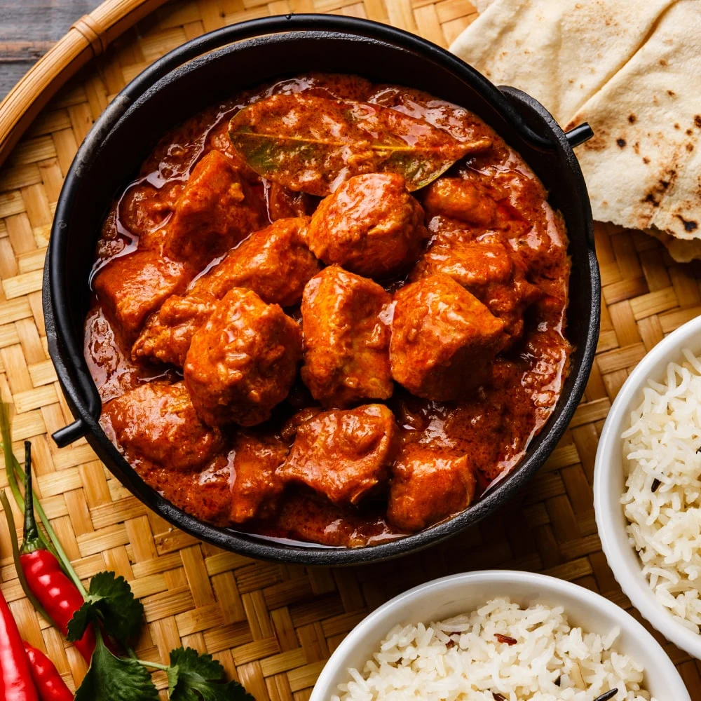

A delicious Indian dish made with chicken marinated in yogurt and spices and then grilled in the oven. It is then cooked in a creamy tomato sauce. Serve with naan or rice.

Ingredients
300 GramsChicken (cut into small pieces)
1/2 cupCurd
1 TspCumin Powder
1-1/2 TspCoriander Powder
1 InchGinger (Finely Chopped)
6 clovesof Garlic (Finely Chopped)
1/2 TspRed Chilli Powder
1 TbspKasuri Methi
To Tastesalt
For Tikka Gravy :
1Onion
1Tomato
5Cashew Nuts
1 TspCumin Powder
1 TspCoriander Powder
1Clove
1/4 TspCinnamon Powder
1/4 TspCardamom Powder
1/2 CupFresh Cream
1 Tbspunsalted Butter
If RequiredOil
To TasteSalt
Preparation
To begin making the Chicken Tikka Masala, thoroughly clean and wash the chicken pieces.
To marinate the Chicken for the Chicken Tikka Masala, in a mixing bowl, combine yogurt, cumin powder, coriander powder, turmeric powder, ginger, garlic, chili powder, kasuri methi and salt along with the chicken. Allow the chicken to marinate for a minimum of 30 minutes.
Once the chicken is marinated, in a pan, add a teaspoon of oil and cook marinated chicken pieces until they are cooked well for about 8 minutes. The chicken pieces should be juicy and tender.
Cooking chicken for an extended time will make them hard and rubbery. Do not add water.
The next step is to make the tikka masala gravy.
Heat a teaspoon of oil over medium heat. Add onion and cook until they become translucent.
Add tomatoes and cook them for about two minutes. Add cashews and toss them for a minute. Allow the onion tomato masala to cool down.
Once it cools down, grind onion, tomato, and cashew into a fine paste.
Heat a kadai/wok with a tablespoon of butter. Once the butter melts, add cloves, cinnamon powder, and cardamom powder and saute until aroma comes out.
Add cumin powder and coriander powder and combine them well.
Add the onion-tomato-cashew puree to the pan, combine them well and saute for few minutes.
Crush kasuri methi with your hand and add to the tikka masala gravy. Add the marinated chicken pieces, required amount of salt and cream. Toss the chicken tikka masala well so that they are combined well.
Simmer the chicken tikka masala for about 5 minutes. If the tikka masala is of thicker consistency, adjust addition of water according to your requirements.
Switch off heat and garnish the chicken tikka masala with coriander leaves and it is ready to be served.
Serve Chicken Tikka Masala with Kulcha or Naan and Pickled onions for a complete Weekend dinner.